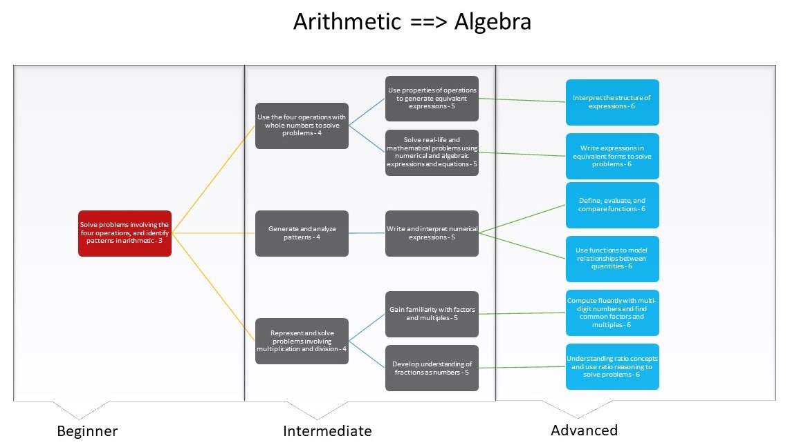

ear331 suchak Full Educational Game Document
Learning Content
Summarize your content area in 1-2 paragraphs.
Our content area for our game will be mathematics, specifically taking as our focus the transition from an understanding of arithmetic and basic operations to an understanding of algebra and algebraic thinking. We focus on building to the ability to understand and model simple numerical relationships between quantities and objects in the world mathematically, such as use of combinations of operators, ratios, combinations of operators, proportional relationships and draw conclusions from these relationships.
Beginning learners in our content area will have an understanding of the four operators in arithmetic and be comfortable using them. Intermediate learners will have an understanding of expressions using combinations of operators, an ability to solve word problems, a familiarity with more complex operators, and exposure to fractions. Advanced learners will have an understanding of creating expressions and equations which describe numerical relationships, an understanding of functions and how to build them, and a more complex understanding of proportional relationships such as ratios. Our content area and learning trajectory are selected in order to emphasize these concepts of numerical relationships, eventually building to complex ideas about functions and proportional relationships and allowing for smooth transitions from one building block to the next.
Describe the age of your user and the skills that you assume the user already has (that is relevant to your content). Your user must be in at least 3rd grade.
Our users will be of ages 8-12 (3rd to 6th grade). This will situate them in between a basic knowledge of operations and a basic understanding of numerical relationships such as ratios, proportional relationships, and simple functions. We assume only that the user will be able to recognize and use basic operators, and understand whole numbers and their relationships as on a number line and as a baseline seek to build upon these concepts.
Describe what skills you are going to teach your user.
In this game we seek to teach our users a variety of skills revolving around numerical relationships applicable in understanding and modeling real world phenomena. Given a user with only the minimum knowledge required to play our game, beginner level skills we seek to teach include: using combinations of operators, generating and analyzing patterns, and representing and solving problems involving arithmetic operators. Given a user with beginner level knowledge, intermediate level skills we seek to teach include: generating expressions, solving real-life and word problems using expressions, basic solving of equations, modeling relationships, and understanding ratios and proportional relationships. Given a user with intermediate level knowledge, we will seek to teach skills such as creation of equations to model relationships and analysis of proportional relationships to represent and solve real-world mathematical problems.
Diagram a learning trajectory for this subject that starts with existing relevant skills on the left-most side and progresses through knowledge they would learn in a game like yours (your game won't need to cover all of this).

Describe your sources and methodology for creating your learning trajectory. It
cannot be just made up yourself - you need to draw upon existing examples or justify the reasons why you have created it in that way.
We were able to derive ideas regarding content area and our learning trajectory from investigation of the standards for mathematical practice for each grade level in the Common Core State Standards. These skills mainly consist the transition from simple arithmetic to more complex algebraic equations from 3rd grade through high school, and the building blocks which compose this process. This trajectory was pieced together emphasizing a logical transition from one building block to the next, centered on themes such as numerical relationships in functions and proportional relationships discussed in our content area. Additionally, some sequential steps reference the same topics; we believe that repeated presentation with increased complexity that can be related to past presentations is an extremely effective learning strategy (See: Spiral Learning).
According to the Common Core Standards website, teachers from all different backgrounds developed the standards to meet the needs of a growing and increasingly diverse student population in the United States (See: Development Process). Opponents of the Common Core Standards claim that the standards have failed to produce adequate results, while proponents say that there has not been enough time in the program and lack of consistent implementation hinders results. We believe that the skills recommended by the Common Core math standards are vital for a robust mathematics education and can be applied in novel ways to approach education and problem solving. Additionally, because the program is impacted dramatically by implementation, and it is impossible to create a program which is applied uniformly by different educators and in different classroom settings, we believe that the core principles and benchmarks are still very useful. Therefore, we have chosen to implement these skills in our learning trajectory, with the understanding of the imperfections of the Common Core, and a determination to build flexibility in our ultimate design that allows for scaling of concepts to the displayed competence of our audience.
Sources List:
Common Core Standards for Mathematics
Development Process - Common Core State Standards Initiative
Spiral Learning Teaching Method
Basic Game Design
First summarize the game type, placing it into a genre. What is a well-known
game that most closely resembles your game? And what are the major differences
between yours and that game?
The game we will create will fall most closely within the bounds of an Adventure game. The user will navigate through the game world and solve individual puzzle instances in order to progress. Our game will be comparable to something like Myst, wherein the player explores an island filled with different paths, dwellings, rooms, and thematic locations uncovering a lore and solving puzzles which culminate in a dramatic end. The major differences will be the real time aspect of our game in that exploration of the varying areas will be more possible (Myst is an older game where each setting is just a frame), the focus on more involved puzzles with engaging mathematical relationships rather than just simple item collection, and the engaging subject material and environment which will be thematically relevant for the typical student user, with provisions to integrate majority and minority students alike.
Describe your game, taking care to describe the different elements such as premise, rules, etc.
The premise of our game is as follows (ideally set with an opening cutscene either before or after the main menu). You and a few of your friends have decided to investigate a suspicious mansion in your neighborhood. You sneak in and hear a noise upstairs, so you climb up and up. As soon as you enter the attic, the door locks behind you. You must escape the house and get home. Players will navigate each floor as its own level and solve mathematically involved puzzles to attain keys and open doors with the goal of getting to the ground floor and escaping. The rules are simple and follow those of a typical adventure game. You as the player character will have an inventory full of items you have collected. There are a set number of rooms you can navigate between on each floor and items to collect and locks to open. We will follow a one key one lock policy in order to make the game accessible to younger users. For instance, a player might be navigating through a hallway to a door marked in blue. The player must then solve a puzzle marked in blue in an available room. The puzzle will require manipulation of proportional relationships, and when solved, provides a blue key. The player can then navigate back to the door, open it and solve another puzzle to access a new room (simplified).
Describe how your choices of elements above will result in the keys to successful
game design, such as increasing difficulty, engaging players' attention, as well as
resulting in learning.
The structure and elements described above lend themselves to these important aspects. Due to our adventure game genre and simple leveled setting, it will be easy to provide a clear and thoughtful increase in difficulty between each unlocked door on one level of the house, and between levels of the house, in order to create progression. Each level will cover a distinct topic area within our learning content, and each subsequent door on that level will add minorly in complexity in order to create a true building challenge which will not only engage but also scaffold. As players move between rooms collecting items and solving puzzles, they will collect additional essential items that reveal a history of the house and past inhabitants' haunted experiences. Additionally, there will be a scoring factor which will be composed of successfully solving puzzles with few attempts and with speed, which will drive engagement for more competitive players or those who tend to minimax.
Describe how different "player types" will find something that engages them.
Many different player types will find engaging elements in this game. We appeal very directly to the explorer, who will find it exciting to uncover new areas of a level, new kinds of challenges, and navigate the world we create; the collector, who will enjoy acquiring the different pieces of knowledge and items the world has to offer and identifying and organizing what kinds of puzzles he can solve with what information; the achiever, who will appreciate the tiered design and the inherent motivation of hitting subgoals; and certainly the craftsman, who will be excited by the design and confrontation of puzzles, as well as building an understanding of what skills and knowledge need be involved to theorize about the puzzle solutions. There are also certainly elements for other players like the competitor, for whom we we build in a timing aspect so they may compete with themself or others even across instances of a singleplayer game; the artist, who will appreciate strong interactive elements and smooth and flashy design of the puzzles; and the storyteller, who will appreciate uncovering the mysteries of the eerie house along with the characters themselves. We will also drive the engagement of players who take educational experiences less seriously through strong interactive elements of the puzzle design; the joker type will ideally find a place in our game in the play that is possible regardless of objectives through manipulating pieces and feeling the impact of his choices.
Describe how your game makes the user progress through the different elements in the learning trajectory you produced. How do you teach different elements and how do you gradually increase the difficulty and/or complexity as users progress through the levels?
The collection of each key will involve solving a puzzle which requires some simple mathematical expression or model. For instance, envision two rotating columns, each with 4 symbols on the sides. Rotation one column makes the other turn 2 symbols forward, and rotating the other makes the first turn 3 symbols forward. Thus, the player will have to investigate mathematical relationships such as proportions and ratios in order to make both columns face the same way. This engagement builds in concepts of these relationships rather than asking players to solve them explicitly, creating strong interactive elements that appeal to many player types while never asking the player to confront math directly. We have brainstormed numerous such puzzle types and are confident in their teach ability due to research on learning trajectories, the potential for employment of spiral learning, and the natural interactivity and engagement that comes from puzzles in the zone of proximal development. New and different elements will be added between rooms and between levels in order to add complexity. Thus, if a player succeeds in traversing an entire floor and moving to the next, we know that they have understood the concepts required to pass that level and can be introduced to new ones, provided familiar concepts to cement those ideas, or provided familiar concepts with increased complexity to build upon them. A simple example going off of that which we present above might be multiplicative elements between the ratios of column movements, or perhaps an increased number of relationships such that different columns rotate proportionally based on the orientation of the others (in essence, complexity can easily be added when a design is intuitive and engaging).
Game Design
Explain how you took into account the limitations in skills of the user to influence your game design.
To properly confront this question we should consider limitations in skills across numerous dimensions. By making sure our in game tutorial instructions and physical key commands and control structure are very accessible, we make sure that our game is as inclusive as possible in terms of a user’s mental and physical abilities as far as grasp of controls. For instance, in our introductory tutorial level, the player will not even need to know how to read English in order to play. Pictures of the keys needed to do certain actions like movement will be displayed alongside animations demonstrating the actions corresponding to the keystrokes (arrow keys displayed while the character moves around the space to pick up to pick up items and unlock doors). Any commands necessary to enjoy the game in its entirety as well as the learn the concepts will be easy to understand.
Not only will the instructions to the game be intuitive in the true spirit of UDL, but the required controls will also be minimalistic, requiring as few keystrokes as possible to execute and relying only upon usage of WASD and QE (which in a full game could be remapped to a different controls scheme to be maximally inclusive). This conscientious design mechanic is done intentionally to make sure that everyone who could benefit from an educational game like this has the chance to succeed. In fact, the character in the game has no direct interaction mechanics other than movement, collecting items and opening doors by simply moving towards them with the arrow keys while also solving mini-game puzzles with arrow keys as well. These conditions ensure that not only will the commands necessary to play the game will be easy to understand but also easy to execute, providing everyone with an opportunity to learn the mathematical concepts the game hopes to convey.
Limitations in skills are taken into account through the creation of intuitive puzzles and interfaces for those puzzles. Regardless of skill and initial understanding of the core mathematical principles which underly a puzzle, users will be able to develop that understanding through play due to both simple controls and clean user interface. Additionally, because an introductory level will be included where the basics of our puzzle minigames are taught using only diagrammatic instructions with strong colors and textures, players will already be introduced to the basic mechanics, which will allow building of skills from there. We assume very little other than basic understanding of causality in movement, which should be understood by our target age and in most cognitively impaired players. Difficulty level differences between rooms and puzzles to allow for learning between instances, but the mechanics stay the same.
Explain how you designed for students of various backgrounds. What cultural
elements did you remove because they are "mainstream" culture that may alienate
some students? What elements did you add to make students of different backgrounds
relate to the game more?
(Note: I will not accept the argument that your game is culturally agnostic. We
all live in a culture, and you need to put in the work to identify what cultural
elements you have included)
In order to truly serve the needs of a relevant educational body of students, our game must address students from all different backgrounds and cultures. We eliminated the use of a default character (e.g. Mario), a remnant of mainstream culture that could alienate some students. Although well-known or recognizable characters are useful for branding purposes, they are not inclusive (e.g. Mario perpetuates stereotypes about Italian-Americans). Therefore, in a full game we would have a fully customizable character with independent attributes such as skin tone, clothing, height, body type, which are all irrespective of race or gender or any other potentially exclusive or stereotyped grouping. Also, any furniture or backgrounds that could be considered majority culture or exclusively Western will be replaced with those that are more equally represented (taking a page from popular video game Overwatch - universally applauded for its inclusion of diverse characters, storylines, and maps). For example, backgrounds of levels and choice in music will be purposefully crafted to match the player’s initial choice in character. Sprites for characters will vary in skin tone and gender ambiguity to more accurately represent more people. By purposefully adding more inclusive cultural elements to the game, we can send a message that everyone is welcome to play and learn without the feeling of alienation that can come with mainstream cultural elements. In addition to incorporating elements from different cultures, our game will also borrow primarily from Japanese video games like Pokemon in terms of cartoon/anime-like sprites moving around rooms and spaces and collecting items in an inventory while the player observes the character and level from a bird’s eye view, an acceptedly global visual style.
At the end of the document, pivot to presenting what you will implement by the
end of the quarter. This must include at least three "levels" of your game.
One needs to be an introductory level. Two others need to be fairly consecutive
more advanced levels that show the progression of difficulty between two
adjacent levels. You also must use the Java game engine unless you have prior
permission to do otherwise. The projects implemented in other technologies were
by and large simplistic last year, so I am very unlikely to allow Unity.
Minimum Viable Product:
Propose what you will implement by the end of the quarter. What levels will you implement? (describe the three levels and where they fall
on your learning trajectory) What will the interface be? Make sure your description is detailed enough so that I can evaluate the challenge for this class. This is our "contract" that, if you implement it in a high-quality way, means you have completed a project sufficient for this course.
Short Game Description:
Haunted House Escape is a puzzle adventure game in which, while exploring a deserted house in your neighborhood, you become trapped. Your goal is to get to the ground floor of the house and escape by solving puzzles and collecting keys.
MVP Specification:
- World and Navigation
- The game world consists of a top down (tilted "bird's eye" view) 2-dimensional environment
- The player will operate a player character sprite which navigates through the world
- The main objects in the game world are doors, walls, and keys
- Doors are barriers which the player collides with until they have the appropriate key. Upon collision a notification will appear indicating which key the player must obtain to open this door. If the player has the appropriate key and collides with the door, a puzzle minigame will commence. If the player is successful, the door will unlock, consuming the key and allowing entry to an additional room or the next level.
- Walls are barriers which the player collides with. Upon collision, an aural and visual indicator will be displayed, but the player may not procede.
- Keys are objects found throughout the world. Upon collision with the player they are added to the inventory and a indicator notifying the player of successful pickup will be displayed
- Each level will be one of these 2-dimensional spaces with walls, a set of doors, and a matching set of keys
- Upon reaching a door where the corresponding key is in inventory, the screen will shift to a puzzle minigame
- Mechanics
- The player will move throughout the world using WASD
- The player will collect items throughout the world by moving over them
- Collected items will appear in the players inventory on screen
- Players will unlock doors by moving to them
- Players will manipulate puzzles by referrencing objects with number keys and rotating objects with WASD and moving between objects to manipulate using Q and E
- The player character has an inventory displayed on screen of currently possessed items
- Level Design
- Leveled design incorporating 3 levels, one introductory, and two intermediate, building in their challenge and demand of expertise.
- Level 0 - "The Attic": INTRO - A single room with one simple challenge.
- Level IV- "Main Floor": INTER This intermediate level will focus on exploring mid level concepts in our learning trajectory (proportional relationships) - 2 rooms.
- Level V - "Ground Floor": INTER This intermediate level will complete mastery of mid level concepts in our learning trajectory (expressions and functions) - 2 rooms.